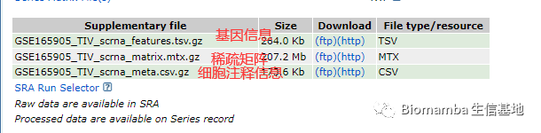
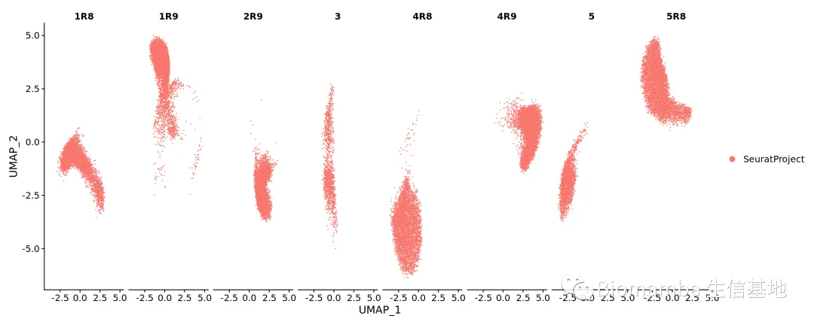

没有barcode文件的单细胞数据要怎么读取
原文：https://mp.weixin.qq.com/s?__biz=MzAwMzIzOTk5OQ==&mid=2247490952&idx=1&sn=364a3941e59e45234795c906a42fc9ab&chksm=9b3f64d8ac48edcec70384cf5c6a91224d0f7841ce3a7cfcade6513500c13673a6695d6f0299#rd 合集：单细胞教程全收录

前言
 今天偶然在GEO里看到这样一个有意思的单细胞数据，metadata倒是上传了，但是cellranger输出的三个文件给了俩。。。作者倘若不上传则罢了，上传了却缺斤短两，快餐时代里，很难让人不觉得这篇文章的数据分析是测序公司代做的。作者这看起来压根连数据结构都不了解，更不要谈数据分析了。鄙人大胆地感觉这篇文章的数据分析 像是个外包项目 。虽然我素来爱胡说八道，但也别跟我说人家可是《Cell》，Cell咋了，Sylvain Lesné在《Science》上不也糊弄了16年？
今天偶然在GEO里看到这样一个有意思的单细胞数据，metadata倒是上传了，但是cellranger输出的三个文件给了俩。。。作者倘若不上传则罢了，上传了却缺斤短两，快餐时代里，很难让人不觉得这篇文章的数据分析是测序公司代做的。作者这看起来压根连数据结构都不了解，更不要谈数据分析了。鄙人大胆地感觉这篇文章的数据分析 像是个外包项目 。虽然我素来爱胡说八道，但也别跟我说人家可是《Cell》，Cell咋了，Sylvain Lesné在《Science》上不也糊弄了16年？
数据链接：
https://www.ncbi.nlm.nih.gov/geo/query/acc.cgi?acc=GSE165905

文章链接： https://pubmed.ncbi.nlm.nih.gov/34174187/倒不是说我不会读取没有细胞名的数据在此无能狂怒，只是没有细胞名称metadata很难对的上。除了用fastq 文件从头做之外，没有其他万无一失的校验方式。读一遍自证清白好了：
library(Seurat)
#先看看这几个数据的结构feature <- read.table(gzfile('GSE165905/GSE165905_TIV_scrna_features.tsv.gz'))head(feature)
## V1 V2 V3 V4
## 1 ENSG00000243485 MIR1302-2HG Gene Expression
## 2 ENSG00000237613 FAM138A Gene Expression
## 3 ENSG00000186092 OR4F5 Gene Expression
## 4 ENSG00000238009 AL627309.1 Gene Expression
## 5 ENSG00000239945 AL627309.3 Gene Expression
## 6 ENSG00000239906 AL627309.2 Gene Expression
mymeta <- read.table(gzfile('GSE165905/GSE165905_TIV_scrna_meta.csv.gz'),
header = T,sep = ',',row.names = 1)
head(mymeta)
## library_id sample_id donor time exp
## AAACCCAAGTTCTCTT-2 1 1R9 Abx-20 d30 82
## AAACCCACATGGCCAC-2 1 1R9 Abx-20 d30 82
## AAACCCACATTGACTG-2 1 1R9 Abx-20 d30 82
## AAACCCAGTAGGTCAG-2 1 1R9 Abx-20 d30 82
## AAACCCAGTTCCACGG-2 1 1R9 Abx-20 d30 82
## AAACCCAGTTGTGCAT-2 1 1R9 Abx-20 d30 82
library(Matrix)
mymatrix <- readMM(gzfile('GSE165905/GSE165905_TIV_scrna_matrix.mtx.gz'))
mymatrix <- as(mymatrix,'dgCMatrix')
dim(mymatrix)#包含的基因数与细胞数
## [1] 33538 34368
mymatrix[1:4,1:4]
## 4 x 4 sparse Matrix of class "dgCMatrix"
##
## [1,] . . . .
## [2,] . . . .
## [3,] . . . .
## [4,] . . . .
try(scRNA <- CreateSeuratObject(counts = mymatrix))
## Error in CreateAssayObject(counts = counts, min.cells = min.cells, min.features = min.features, :
## No cell names (colnames) names present in the input matrix
#直接创建肯定是不行的#那我们来把行名和列名加上rownames(mymatrix) <- feature$V2colnames(mymatrix) <- rownames(mymeta)#我们就先认为他提供的metadata与系数矩阵顺序一致吧scRNA <- CreateSeuratObject(counts = mymatrix)
## Warning: Non-unique features (rownames) present in the input matrix, making
## unique
接下来把metadata加到Seurat对象中去，看看顺序究竟是否一致
scRNA <- AddMetaData(scRNA,metadata = mymeta)
scRNA[["percent.mt"]] <- PercentageFeatureSet(scRNA, pattern = "^MT-")
scRNA <- NormalizeData(scRNA, normalization.method = "LogNormalize", scale.factor = 10000)
try(scRNA <- FindVariableFeatures(scRNA, selection.method = "vst", nfeatures = 2000))#这步也失败，这个数据多少透露着点诡异
## Error in simpleLoess(y, x, w, span, degree = degree, parametric = parametric, :
## invalid 'x'
#用sd筛选一下高变基因吧
mysd <- apply(as.data.frame(mymatrix), 1, function(x){sd(x)})library(dplyr)
##
## Attaching package: 'dplyr'
## The following objects are masked from 'package:stats':
##
## filter, lag
## The following objects are masked from 'package:base':
##
## intersect, setdiff, setequal, union
my.var.gene <- mysd[order(mysd,decreasing = T)[1:2000]] %>%names()# 筛选高变基因（输出2000个），用于下游的PCA及分群
scRNA <- ScaleData(scRNA, features = my.var.gene)
## Centering and scaling data matrix
scRNA <- RunPCA(scRNA, features = my.var.gene)
## PC_ 1
## Positive: ZNHIT6, ENO1, S100A9, LSM10, CDC42SE1, SYTL1, JAK1, GBP2, CD53, SRGAP2B
## CTSS, ARID1A, PRPF38B, LAPTM5, PIK3CD, SDHB, TPM3, RPS8, S100A11, PRDM2
## C1orf162, HIPK1, CD58, DPYD, DRAM2, JTB, THEMIS2, USP33, MTFR1L, SSU72
## Negative: GBP4, RERE, SPEN, ITGB3BP, ADAR, TNFRSF14, WDR77, FOXD2, TMEM69, NOC2L
## MAD2L2, PARK7, ZBTB8OS, PSMB4, EFHD2, MYSM1, MRPS21, CEPT1, NOTCH2, USP48
## PRDX1, PMVK, C1orf43, NASP, AKIRIN1, STMN1, AGO4, RBM8A, CDA, TMEM59
## PC_ 2
## Positive: C1orf162, C1orf56, THEMIS2, MRPS21, ZBTB8OS, SYTL1, AMPD2, TMED5, WASF2, PMVK
## SDHB, CEPT1, TAF12, ZNF593, ABCD3, PRDX1, RCC2, AKIRIN1, KPNA6, FOXD2
## STMN1, S100A9, NUDC, GBP5, DPYD, FGR, AGTRAP, MUTYH, LAPTM5, GMEB1
## Negative: ENO1, PABPC4, CAP1, HIPK1, CTSS, CDC42, HNRNPR, MAST2, JUN, GNG5
## SCP2, EFHD2, NECAP2, PIP5K1A, PPT1, YRDC, RAP1A, DNTTIP2, AHCYL1, SFPQ
## RPL22, MIB2, UQCRH, S100A11, SELENOF, NOTCH2, RPS27, SH3BGRL3, MINOS1, PIK3CD
## PC_ 3
## Positive: CEP104, S100A9, S100A6, EFNA3, WDR77, ATP1A1, CDKN2C, ADAR, S100A11, AGO4
## USP1, JAK1, RPL11, PMVK, ATP5PB, PSMB2, MED18, RERE, C1orf43, PLEKHO1
## SSU72, RHOC, GMEB1, ENO1, CDC42SE1, SRGAP2B, TMEM59, KPNA6, ALDH4A1, ILF2
## Negative: WASF2, DPYD, TAF12, PIP5K1A, YRDC, ZNHIT6, CDC42, LZIC, ZNF593, AGO1
## ISG15, SELENOF, PPIE, RBM8A, CEPT1, MIER1, RPS6KA1, ENSA, AHCYL1, FBXO44
## LAPTM5, INPP5B, AMPD2, CTNNBIP1, S100A4, NECAP2, TXNIP, MTFR1L, TMEM50A, EFHD2
## PC_ 4
## Positive: DRAM2, SRGAP2B, RNF115, AMPD2, C1orf56, JUN, SELENOF, SORT1, LSM10, RSRP1
## ENO1, NECAP2, RBM8A, RPL11, CD58, MRPS21, PSMB4, TMEM167B, SLC27A3, SLC39A1
## YTHDF2, THRAP3, SYTL1, ATP1A1, GNG5, MACF1, CHTOP, RNF19B, TXNIP, C1orf43
## Negative: HMGN2, KIF1B, PRDM2, SCP2, EFHD2, MTFR1L, AGO4, SERBP1, GBP2, RPS8
## EPS15, TMED5, PRPF38B, MED18, NOC2L, ILF2, MAD2L2, AGO1, FBXO44, USP1
## RCC2, MIB2, SVBP, TNFRSF1B, KPNA6, PSMB2, SMAP2, HES4, STMN1, ZBTB8OS
## PC_ 5
## Positive: NASP, TNFRSF1B, RCC2, AKIRIN1, STMN1, CTNNBIP1, SCP2, FAF1, GNG5, THEMIS2
## PIP5K1A, MUTYH, FBXO44, HIPK1, TNFRSF14, RPS6KA1, PMVK, SDHB, ZNHIT6, NUDC
## SRGAP2B, ATP1A1, ILF2, ZNF326, TMEM69, NOTCH2, RPL22, PPT1, PTP4A2, LSM10
## Negative: PAQR7, CCNL2, UBIAD1, LRRC40, RAP1A, CEPT1, SETDB1, RHOC, MIER1, S100A11
## SRSF11, YRDC, HMGN2, AMPD2, SRRM1, ISG15, MED18, RSRP1, WDR77, SELENOF
## NDC1, CD52, KPNA6, INPP5B, NOC2L, AGO3, GBP2, LZIC, DNTTIP2, ENSA
scRNA <- RunUMAP(scRNA, dims = 1:15) #运行UMAP算法
## 15:11:17 UMAP embedding parameters a = 0.9922 b = 1.112
## 15:11:17 Read 34368 rows and found 15 numeric columns
## 15:11:17 Using Annoy for neighbor search, n_neighbors = 30
## 15:11:17 Building Annoy index with metric = cosine, n_trees = 50
## 0% 10 20 30 40 50 60 70 80 90 100%
## [----|----|----|----|----|----|----|----|----|----|
## **************************************************|
## 15:11:22 Writing NN index file to temp file /tmp/RtmpgwGQbr/file28ec684dd0989c
## 15:11:22 Searching Annoy index using 1 thread, search_k = 3000
## 15:11:41 Annoy recall = 1.423%
## 15:11:42 Commencing smooth kNN distance calibration using 1 thread
## 15:11:43 34368 smooth knn distance failures
## 15:11:44 Initializing from normalized Laplacian + noise
## 15:11:46 Commencing optimization for 200 epochs, with 2054860 positive edges
## 15:14:21 Optimization finished
DimPlot(scRNA,split.by = 'sample_id')

看起来样本间的批次效应是存在的，但作者没有给注释后的细胞类型信息，看起来我们无法考究细胞名的顺序与metadata是否一致，更深层次的探讨可能需要大家对着原文的组间差异重新做一遍加以检验，这里我推荐还是给细胞派一个随机的名称为好。
mycellname <- paste0('Biommaba_',1:dim(mymatrix)[2])
rownames(mymatrix) <- feature$V2
colnames(mymatrix) <- mycellname
scRNA2 <- CreateSeuratObject(counts = mymatrix)
## Warning: Non-unique features (rownames) present in the input matrix, making
## unique
mymatrix[1:4,1:4]
## 4 x 4 sparse Matrix of class "dgCMatrix"
## Biommaba_1 Biommaba_2 Biommaba_3 Biommaba_4
## MIR1302-2HG . . . .
## FAM138A . . . .
## OR4F5 . . . .
## AL627309.1 . . . .
scRNA2
## An object of class Seurat
## 33538 features across 34368 samples within 1 assay
## Active assay: RNA (33538 features, 0 variable features)
这里由于没有样本信息和分组变量就无法去做差异分析了，所以也就不往下做了，所以真正想要分析这个数据的同学我还是建议你从fastq 做起吧。
如何联系我们
公众号后台中消息更新不及时，超过48h后便不允许回复读者消息，这里给大家留一下领取资料、咨询服务器的微信号 ，方便大家随时交流、提建议（由助理接待）。此外呼声一直很高的交流群也建好了，欢迎大家入群讨论：永久免费的千人生信、科研交流群
大家可以阅读完这几篇之后添加笑一笑也就算了如何搜索公众号过往发布内容